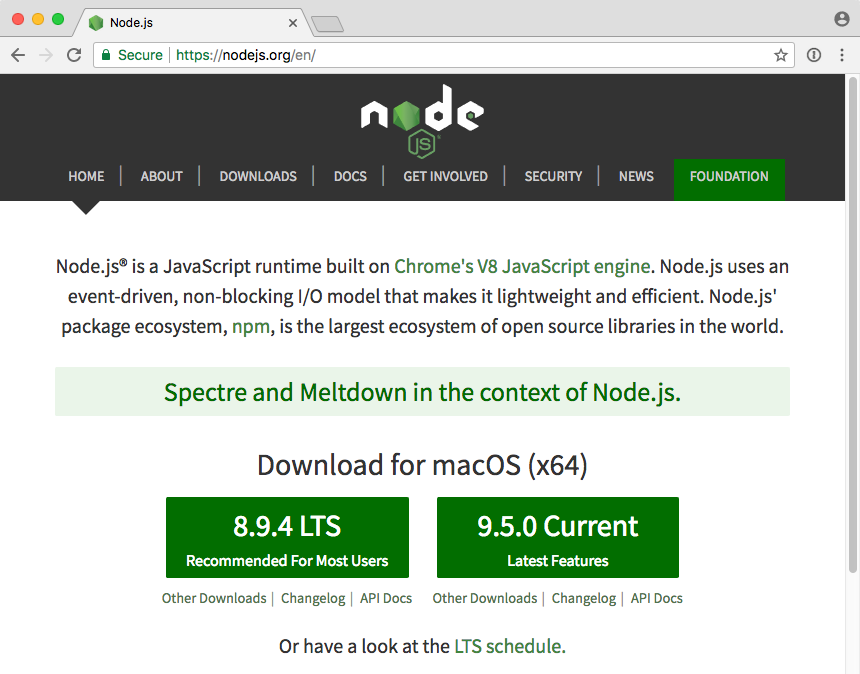

# Node.js Introduction Learn how to use [Node.js][node], an asynchronous JavaScript runtime that can run on your local machine or server. This material is used in [COMEM+](http://www.heig-vd.ch/comem) [web development courses](https://github.com/MediaComem/comem-webdev). **You will need** * A Unix CLI **Recommended reading** * [Command line](../cli/) * [JavaScript](../js/) --- class: center, middle, image-header ## What is [Node.js][node]? .breadcrumbs[<a href="#1">Node.js Introduction</a>] <p class='center'><img src='images/node.png' width='50%' /></p> > "Node.js is an **asynchronous JavaScript runtime** built on Chrome's V8 JavaScript engine. > Node.js uses an **event-driven**, **non-blocking I/O** model that makes it lightweight and efficient." > "Node.js is used on servers to develop fast, scalable web applications." --- ### Installation .breadcrumbs[<a href="#1">Node.js Introduction</a> > <a href="#2">What is [Node.js][node]?</a>] <p class='center'></p> --- ### Which Node.js version to choose? .breadcrumbs[<a href="#1">Node.js Introduction</a> > <a href="#2">What is [Node.js][node]?</a>] <p class='center'><img src='images/lts-schedule.png' width='80%' /></p> * Odd-numbered versions (e.g. v5, v7) are **unstable** releases with the latest features, and will **no longer be supported after 6-9 months**. * Even-numbered versions (e.g. v4, v6) have **long term support (LTS)**. They are actively developed for 6 months. They are supported for 18 months after that. They are still maintained (e.g. security fixes) for 12 months after that. So they are **supported for 36 months**. --- ### Install Node.js and make sure it works .breadcrumbs[<a href="#1">Node.js Introduction</a> > <a href="#2">What is [Node.js][node]?</a>] Download and install Node.js now. If the installation was successfull, you should be able to access Node.js in your CLI: ```bash $> node --version v6.10.0 $> node > 1 + 2 3 ``` Type `Ctrl-C` or `.exit` to exit. --- ### Create and execute a Node.js file .breadcrumbs[<a href="#1">Node.js Introduction</a> > <a href="#2">What is [Node.js][node]?</a>] Create a `script.js` file in a new `node-demo` project directory: ```js function hello(name) { console.log('Hello ' + name + '!'); } hello('World'); ``` Execute it by running it with the `node` executable: ```bash $> cd /path/to/projects/node-demo $> node script.js Hello World! ``` Originally, JavaScript was only executable in web browsers, but here you are running JavaScript code **locally with Node.js**, like you would other scripting languages (e.g. PHP, Ruby or Python). --- ### Node.js modules .breadcrumbs[<a href="#1">Node.js Introduction</a> > <a href="#2">What is [Node.js][node]?</a>] Node.js code is organized in **modules**. These are the core modules available to you out of the box: .grid-30[ * Assertion Testing * Buffer * C/C++ Addons * **Child Processes** * Cluster * Command Line Options * Console * **Crypto** * Debugger * DNS * Domain * Errors ] .grid-30[ * **Events** * **File System** * Globals * **HTTP** * **HTTPS** * Modules * Net * OS * **Path** * **Process** * Punycode * Query Strings ] .grid-30[ * Readline * REPL * Stream * String Decoder * Timers * TLS/SSL * TTY * UDP/Datagram * URL * Utilities * V8 * VM * ZLIB ] --- ### Using modules .breadcrumbs[<a href="#1">Node.js Introduction</a> > <a href="#2">What is [Node.js][node]?</a>] You can use modules in your code with `require()`: ```js // Require the operating system core module const os = require('os'); function hello(name) { console.log('Hello ' + name + '!'); * console.log('I am running on ' + os.platform()); } hello('World'); ``` This will log the platform on which you are running: ```bash $> node script.js Hello World! I am running on darwin ``` --- ### Writing your own module .breadcrumbs[<a href="#1">Node.js Introduction</a> > <a href="#2">What is [Node.js][node]?</a>] Let's say we want to extract the `hello` function to another module. Create a `utils.js` file: ```js const os = require('os'); // Attach properties to exports so that you can use // them when requiring this file `exports`.hello = function(name) { console.log('Hello ' + name + '!'); console.log('I am running on ' + os.platform()); }; ``` Attaching properties to the `exports` object is how you expose the module's functionality. Code that uses `require()` on that file will receive the `exports` object. --- ### Requiring local modules .breadcrumbs[<a href="#1">Node.js Introduction</a> > <a href="#2">What is [Node.js][node]?</a>] You also use `require()` for your own module, but instead of just a name you have to provide a **relative file path**. Modify `script.js` as follows: ```js // Require the utils.js file in the current directory // (You can omit the .js extension) const utils = require(`'./utils'`); // Use the exported function utils.hello('World'); ``` It should still work: ```bash $> node script.js Hello World! I am running on darwin ``` --- ### Export properties .breadcrumbs[<a href="#1">Node.js Introduction</a> > <a href="#2">What is [Node.js][node]?</a>] You can attach whatever you want to the `exports` object: ```js `exports.theMeaningOfLife` = 42; ``` And use it where it is required: ```js const utils = require('./utils'); utils.hello('World'); console.log('The meaning of life is ' + `utils.theMeaningOfLife`); ``` This will print: ```bash $> node script.js Hello World! I am running on darwin *The meaning of life is 42 ``` --- ### Function as the main export .breadcrumbs[<a href="#1">Node.js Introduction</a> > <a href="#2">What is [Node.js][node]?</a>] Some modules only export a function instead of an object with properties. Add a `doIt.js` file: ```js // Override module.exports to replace the whole exports object `module.exports =` function() { console.log('Doing it'); }; ``` Modify `script.js`: ```js *const doIt = require('./doIt'); const utils = require('./utils'); utils.hello('World'); console.log('The meaning of life is ' + utils.theMeaningOfLife); *doIt(); ``` The additional text `Doing it` will be logged as well. --- ### Require paths .breadcrumbs[<a href="#1">Node.js Introduction</a> > <a href="#2">What is [Node.js][node]?</a>] A short summary on how to require files: Statement | Effect :--- | :--- `require('coreModule')` | Require the core module (or npm package) named `coreModule` `require('./foo.js')` | Require the `foo.js` file in the current directory (relative to the current file) `require('./foo/bar/baz.js')` | Require the `baz.js` file in the `foo/bar` directory (relative to the current file) `require('../../qux.js')` | Require the `qux.js` file two directories above (relative to the current file) --- class: center, middle ## Synchronous vs. Asynchronous .breadcrumbs[<a href="#1">Node.js Introduction</a>] --- ### Synchronous code .breadcrumbs[<a href="#1">Node.js Introduction</a> > <a href="#14">Synchronous vs. Asynchronous</a>] Basic JavaScript code is synchronous. It means that only one command or function can be executed at a time. ```js function getRandomNumber() { return Math.random(); } console.log('Hello'); const result = getRandomNumber(); console.log('Result: ' + result); console.log('End of program'); ``` Code executes **sequentially**: ```txt Hello Result: 0.12438 End of program ``` The call to `getRandomNumber()` blocks the thread until its execution is complete. --- ### Asynchronous code .breadcrumbs[<a href="#1">Node.js Introduction</a> > <a href="#14">Synchronous vs. Asynchronous</a>] With asynchronous code, some operations are executed **in parallel**: ```js const fs = require('fs'); console.log('Hello'); fs.readFile('random.txt', 'utf-8', function(err, result) { console.log('Result: ' + result); console.log('Done'); }); console.log('End of program'); ``` Code execution is **not sequential**: ```txt Hello End of program Result: 0.581 Done ``` How does this work? --- ### Non-blocking I/O .breadcrumbs[<a href="#1">Node.js Introduction</a> > <a href="#14">Synchronous vs. Asynchronous</a>] The signature of `fs.readFile` is: ``` fs.readFile(file[, options], callback) ``` The third argument is a **callback function**: * With synchronous code, the call blocks the thread until it is done * With asynchronous code, the rest of the code **keeps executing**; you pass a function to `fs.readFile` and Node.js will **call you back** when it is done Under the hood, Node.js will read the file in a separate thread, then execute your callback function when it's ready. --- ### Your Node.js code is single-threaded .breadcrumbs[<a href="#1">Node.js Introduction</a> > <a href="#14">Synchronous vs. Asynchronous</a>] Although I/O operations are non-blocking, **your code always executes in a single thread**: ```js const fs = require('fs'); let value = 1; fs.readFile('five.txt', 'utf-8', function(err, result) { `value = value + parseFloat(result)`; console.log(value); }); `value = value * 2`; console.log(value); ``` This will always log **2** first, then **7** (i.e. first * 2, then + 5). Even if the file is read instantaneously and the contents of the file is ready immediately, Node.js **guarantees** that `value = value * 2` will be executed first. Callback functions will always wait for the blocking code to finish executing. --- ### The event loop .breadcrumbs[<a href="#1">Node.js Introduction</a> > <a href="#14">Synchronous vs. Asynchronous</a>] This is the mechanism that enables the behavior in the previous slides: <img src='images/event-loop.png' width='100%' /> ??? * Event loop: * Run the initial script (which will register callbacks) * Get the next event in the queue * Invoke the registered callbacks in sequence * Delegate I/O operations to the Node platform (in separate, non-blocking threads) --- ### Other event-driven, non-blocking I/O architectures .breadcrumbs[<a href="#1">Node.js Introduction</a> > <a href="#14">Synchronous vs. Asynchronous</a>] Similar mechanisms are used in other frameworks and tools: * JavaScript running in the browser also runs on an event loop * [Event Machine][event-machine] (Ruby event-processing library) * [nginx][nginx] (web server written in C with an event-driven architecture) * [Twisted][twisted] (Python event-driven networking engine) --- ## Node.js callback convention .breadcrumbs[<a href="#1">Node.js Introduction</a>] Node.js callback functions usually have this signature: ``` function(err, result) ``` There are two ways that the function can be called back: 1. The operation **failed**: * `err` contains an error describing the problem * `result` is `null` or `undefined` 2. The operation **succeeded**: * `err` is `null` or `undefined` * `result` contains the result of the operation --- ### **Always** check for errors .breadcrumbs[<a href="#1">Node.js Introduction</a> > <a href="#21">Node.js callback convention</a>] You should never forget to check for errors: ```js const fs = require('fs'); fs.readFile('name.txt', 'utf-8', function(err, data) { * if (err) { * return console.warn('Could not read the file because: ' + err.message); * } console.log('Hello ' + data); }); ``` If you forget to check `err`, this code could log `Hello undefined` if the operation fails (e.g. the file doesn't exist, is corrupt, etc). Do not forget the `return` either, or use `else`, to ensure that your "success" code is not run when an error occurs. --- class: center, middle ## Spot the mistake .breadcrumbs[<a href="#1">Node.js Introduction</a>] --- ### Mistake 1 .breadcrumbs[<a href="#1">Node.js Introduction</a> > <a href="#23">Spot the mistake</a>] What's wrong with this code? ```js const fs = require('fs'); // Read a name from name.txt const name = fs.readFile('name.txt', 'utf-8', function(err, nameInFile) { if (err) { return console.warn('Could not read file because: ' + err.message); } return nameInFile; }); // Save a salutation into hello.txt const salutation = 'Hello ' + name + '!'; fs.writeFile('hello.txt', salutation, 'utf-8', function(err) { if (err) { console.warn('Could not write in file because: ' + err.message); } }); ``` --- #### Mistake 1 result .breadcrumbs[<a href="#1">Node.js Introduction</a> > <a href="#23">Spot the mistake</a> > <a href="#24">Mistake 1</a>] If you save this script in `bug1.js`, save a `name.txt` file containing a name and execute the script, this is what will happen: ```bash $> echo World > name.txt $> node bug1.js $> cat hello.txt Hello undefined! ``` The script could not read the name from `name.txt`. --- #### Mistake 1 asynchronous issue .breadcrumbs[<a href="#1">Node.js Introduction</a> > <a href="#23">Spot the mistake</a> > <a href="#24">Mistake 1</a>] There are two problems with this code. First, Node.js I/O functions (such as file operations) are **asynchronous**. When `fs.readFile()` is called, Node.js will start a thread and read the file in the background. Meanwhile, **your code will keep executing** and the call to `fs.writeFile` will occur **before the callback function of `fs.readFile` is called back**. ```js const fs = require('fs'); // Read a name from name.txt const name = `fs.readFile`('name.txt', 'utf-8', function(err, nameInFile) { if (err) { return console.warn('Could not read file because: ' + err.message); } return nameInFile; }); // Save a salutation into hello.txt const salutation = 'Hello ' + name + '!'; `fs.writeFile`('hello.txt', salutation, 'utf-8', function(err) { if (err) { console.warn('Could not write in file because: ' + err.message); } }); ``` --- #### Mistake 1 return issue .breadcrumbs[<a href="#1">Node.js Introduction</a> > <a href="#23">Spot the mistake</a> > <a href="#24">Mistake 1</a>] Second, even if there was no asynchronous issue, the assignment of `const name` would still be `undefined`: * You are calling `fs.readFile()`, which returns `undefined`, and that is what is stored in the `name` variable * **When** Node.js is done reading the file in a separate thread, **it will call your callback function (later)** * The return value of your callback function is **not going anywhere** ```js const fs = require('fs'); // Read a name from name.txt `const name` = fs.readFile('name.txt', 'utf-8', function(err, nameInFile) { `return nameInFile`; }); // Save a salutation into hello.txt const salutation = 'Hello ' + name + '!'; fs.writeFile('hello.txt', salutation, 'utf-8', function(err) { if (err) { console.warn('Could not write in file because: ' + err.message); } }); ``` --- #### Mistake 1 correct implementation .breadcrumbs[<a href="#1">Node.js Introduction</a> > <a href="#23">Spot the mistake</a> > <a href="#24">Mistake 1</a>] The second asynchronous call must be performed **inside the callback function of the previous call**. That way, it will not be executed **until the first call is done** and Node.js has called your callback function. You will also have direct access to the **result** passed to the callback function: ```js const fs = require('fs'); // Read a name from name.txt fs.readFile('name.txt', 'utf-8', `function(err, nameInFile) {` if (err) { return console.warn('Could not read file because: ' + err.message); } // Save a salutation into hello.txt const salutation = 'Hello ' + nameInFile + '!'; fs.writeFile('hello.txt', salutation, 'utf-8', function(err) { if (err) { console.warn('Could not write in file because: ' + err.message); } }); `}`); ``` --- ### Mistake 2 .breadcrumbs[<a href="#1">Node.js Introduction</a> > <a href="#23">Spot the mistake</a>] This is an example of **error handling**. The intended behavior is that if the file does not exist, the text `Could not read file because: some error` should be printed, otherwise it should print the contents of the file in upper case. ```js const fs = require('fs'); // Read the contents of a file fs.readFile('file-that-does-not-exist.txt', 'utf-8', function(err, text) { if (err) { console.warn('Could not read file because: ' + err.message); } // Log the contents in upper case console.log(text.toUpperCase()); }); ``` What's wrong with this code? --- #### Mistake 2 result .breadcrumbs[<a href="#1">Node.js Introduction</a> > <a href="#23">Spot the mistake</a> > <a href="#29">Mistake 2</a>] If you save this script in `bug2.js` and execute it, this is what will happen: ```bash $> node bug2.js Could not read file because: ENOENT: no such file or directory, open 'file-...' /path/to/projects/node-demo/bug2.js:9 console.log(text.toUpperCase()); ^ TypeError: Cannot read property 'toUpperCase' of undefined at ReadFileContext.callback (/path/to/projects/node-demo/bug2.js:9:19) at FSReqWrap.readFileAfterOpen [as oncomplete] (fs.js:365:13) ``` As expected, we see the `Could not read file because: ...` log. But we also see another **unexpected error** and its stack trace. --- #### Mistake 2 issue .breadcrumbs[<a href="#1">Node.js Introduction</a> > <a href="#23">Spot the mistake</a> > <a href="#29">Mistake 2</a>] There is an error check, but execution of the callback function is **not stopped** as there is no `return` and no `else`. If an error occurs, **both the `console.warn` and the `console.log` calls will be executed**. This will cause a "null pointer exception": ```js const fs = require('fs'); // Read the contents of a file fs.readFile('file-that-does-not-exist.txt', 'utf-8', function(err, text) { if (err) { * console.warn('Could not read file because: ' + err.message); } // Log the contents in upper case * console.log(text.toUpperCase()); }); ``` --- #### Mistake 2 correct implementation .breadcrumbs[<a href="#1">Node.js Introduction</a> > <a href="#23">Spot the mistake</a> > <a href="#29">Mistake 2</a>] You can add a `return` to solve the issue: ```js const fs = require('fs'); // Read the contents of a file fs.readFile('file-that-does-not-exist.txt', 'utf-8', function(err, text) { if (err) { `return` console.warn('Could not read file because: ' + err.message); } // Log the contents in upper case console.log(text.toUpperCase()); }); ``` Or use an `if/else`: ```js const fs = require('fs'); // Read the contents of a file fs.readFile('file-that-does-not-exist.txt', 'utf-8', function(err, text) { `if (err) {` console.warn('Could not read file because: ' + err.message); `} else {` // Log the contents in upper case console.log(text.toUpperCase()); `}` }); ``` --- class: center, middle ## The HTTP module .breadcrumbs[<a href="#1">Node.js Introduction</a>] --- ### Modern web language .breadcrumbs[<a href="#1">Node.js Introduction</a> > <a href="#33">The HTTP module</a>] Node.js provides a ready-to-use HTTP server. Thanks to the event loop, this one small server can handle many clients concurrently. ```js // Require the HTTP module. const http = require('http'); // Define configuration properties. const hostname = '127.0.0.1'; const port = 3000; // Create an HTTP server that will respond to // all requests with "Hello World" in plain text. const server = http.createServer(function(req, res) { res.statusCode = 200; res.setHeader('Content-Type', 'text/plain'); res.end('Hello World\n'); }); // Run the server on the configured host and port. // Register a callback function to be notified when // the server has started successfully. server.listen(port, hostname, function() { console.log('Server running at http://' + hostname + ':' + port + '/'); }); ``` --- ### Event emitters .breadcrumbs[<a href="#1">Node.js Introduction</a> > <a href="#33">The HTTP module</a>] Many Node.js objects are [event emitters][node-event-emitter]. You can register callback functions to **react** to these events: .grid-30[ <img src='images/http-events.png' width='100%' /> ] .grid-70[ ```js server.on('connection', function(socket) { console.log(socket.remoteAddress + ' connected'); }); server.on('request', function(message) { console.log(message.url + ' requested'); }); ``` ] --- ## Resources .breadcrumbs[<a href="#1">Node.js Introduction</a>] **Documentation** * [Core modules (6.x)][node-6-api] **Further reading** * [What is Node.js][mixu-node-book] * [Understanding the Node.js Event Loop][event-loop] * [Node.js Explained (video)][node-explained-video] [event-loop]: http://strongloop.com/strongblog/node-js-event-loop/ [event-machine]: http://rubyeventmachine.com [mixu-node-book]: http://book.mixu.net/node/ch2.html [nginx]: https://www.nginx.com [node]: https://nodejs.org/en/ [node-6-api]: https://nodejs.org/dist/latest-v6.x/docs/api/ [node-event-emitter]: https://nodejs.org/api/events.html [node-explained-video]: http://kunkle.org/talks/ [twisted]: http://twistedmatrix.com/trac/